/ HALion Developer Resource / HALion Tutorials & Guidelines / Tutorials /
Creating an FX Chain
On this page:
- Example VST Preset
- Prerequisites
- Workflow Overview
- Adjusting the Number of Slots
- Adding Further Effects
- Final Example VST Preset
- How the Elements Interact
- Transferring the FX Chain to Your Instrument
- FX Chain with Custom Look
This tutorial describes how to create an FX Chain using a Template List. The FX Chain provides several slots for loading a predefined set of effects using a Custom Popup Menu. Furthermore, you can rearrange effects using drag and drop.
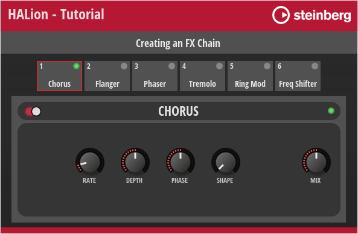
❕ For an example of a classic FX Rack instead of an FX Chain, see Creating an FX Rack.
Example VST Preset
The FX Chain in this example uses both UI and MIDI script functionality. The corresponding scripts are provided, but not explained in detail line by line. Instead, the connections and interactions between the UI elements and the UI and MIDI scripts are explained so that you can adjust the number of slots and customize the look of the FX Chain without the risk of introducing errors. See How the Elements Interact.
The following section describes how to access Templates and edit UI and MIDI scripts.
To explore the templates in this example:
- Open the Macro Page Designer, go to the Templates Tree and select the template that you want to explore.
- Click Edit Element
 to examine the template.
to examine the template.
To edit the UI script:
- Open the Macro Page Designer and select the topmost element in the GUI Tree.
- Go to the Properties section and click Edit Script to open the internal script editor.
To edit the MIDI script:
- In the Program Tree, select the FX Chain MIDI Module.
- Go to the Sound editor and click Edit Script to open the internal script editor.
The instructions that follow use the internal script editor.
Prerequisites
- You have an instrument with a macro page.
- You have loaded both the preset Creating an FX Chain 01.vstpreset and your instrument into HALion.
Workflow Overview
- Adjust the number of slots in the UI script.
- Add further effects to the UI script and create templates for them.
- Copy the bus and effects from the Example VST Preset to your instrument.
- Copy the templates and resources from the Example VST Preset to your macro page.
- Copy the code of the UI and MIDI scripts from the Example VST Preset into the corresponding scripts of your instrument.
- Change the look of the FX Chain to match the look of your instrument.
Adjusting the Number of Slots
The FX Chain in the Example VST Preset has six slots. You can adjust the number of slots in the FX Chain by setting the numFxSlots variable in the UI script to the desired value.
Let's increase the number of slots from six to seven:
- In the Macro Page Designer, open the UI script in the internal script editor.
- Set the
numFxSlotsvariable to 7.
-- FX Chain handling.
numFxSlots = 7
- In the GUI Tree, select the 'FX Chain' Template List. Set the position and size as follows:
| Property | Value |
|---|---|
| Position X | 21 |
| Position Y | 100 |
| Width | 555 |
| Height | 55 |
- Update the UI, for example, by selecting a different program and then returning to the Example VST Preset. This will rebuild the macro page and apply your changes.
The FX Chain should now have seven slots on the macro page.
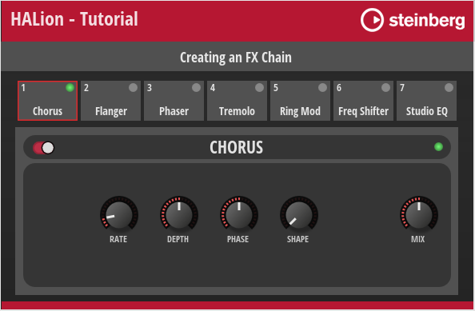
Adding Further Effects
To add additional effects, you need to edit the UI script, as well as modify and create the relevant Templates. Let's add "Distortion" to the selection of available effects.
Editing the UI Script
We will use the Clipper effect as a distortion. Therefore, we define fxType = "Clipper" and name = "Distortion". The value of fxType is used for loading the effect upon initialization and the value of name is used for naming the effect in the Program Tree. Functions and templates will also refer to this name.
- In the Macro Page Designer, open the UI script in the internal script editor.
- In the
effectstable, between the entries for"Freq Shifter"and"Studio EQ", insert the following lines:
{ name = "Distortion",
fxType = "Clipper",
settings = {
outputgain = 0.5,
hpcutoff = 0,
hardclip = 0,
Oversample = 1,
lpcutoff = 1,
hardclipoffset = 0,
inputgain = 0.5,
},
},
The code example above lists only the lines of code that need to be added to the effects table. The table lists the available effects and their parameters with names and default settings. The normalized range from 0 to 1 is used for the default settings. The default settings will be used when initializing the effects.
❕ For a code example on how to write effects and their settings to a table, see Snapshot Effects.
Creating a Template for the FX Slot
Each effect has its own template that is displayed in the slot when the effect is selected. Let's create a slot template for the Distortion effect by reusing an existing one.
- In the Templates Tree, navigate to 'library/FX Chain/FX Slots'.
- Copy and paste an existing slot template to the 'FX Slots' folder. You can copy any slot template except the 'FX_Slot' and 'FX_Slot_No_FX' templates.
- Rename the new template to 'FX_Slot_Distortion' and click Edit Element .
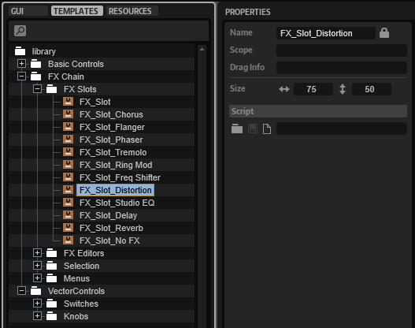
- In the GUI Tree, navigate to 'FX_Slot_Distortion/FX Type'. Set the Text property as follows:
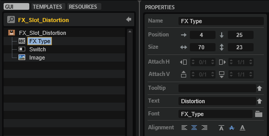
FX Type
| Property | Value |
|---|---|
| Text | Distortion |
Creating a Template for the FX Panel
The Distortion effect needs an FX panel. Let's create one by reusing an existing effect template.
- In the Templates Tree, navigate to 'library/FX Chain/FX Editors'.
- Copy and paste an existing effect template to the 'FX Editors' folder. You can copy any effect template except the 'FX_Editor_No_FX' template.
- Rename the new template to 'FX_Editor_Distortion' and click Edit Element .
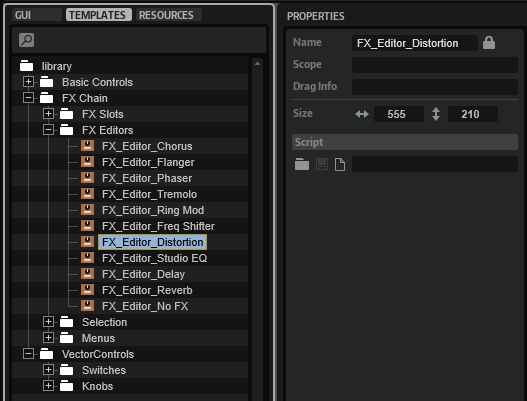
- Adjust the Properties of the controls and templates as described below.
Switch, On and Disable
The Switch, On, and Disable elements must all be connected to the Distortion's Bypass parameter. The easiest way to connect the Bypass parameter is by using drag and drop from the Parameter List. For this, you need to select the Distortion effect in the Program Tree and open the Parameter List.
- In the GUI Tree, select the 'Switch' element and drag the Distortion's Bypass parameter from the Parameter List onto the Value field.
- Select the 'On' element, go to the Template Parameters section and drag the Distortion's Bypass parameter from the Parameter List onto the Value field.
- Select the 'Disable' element and drag the Distortion's Bypass parameter from the Parameter List onto the Value field.
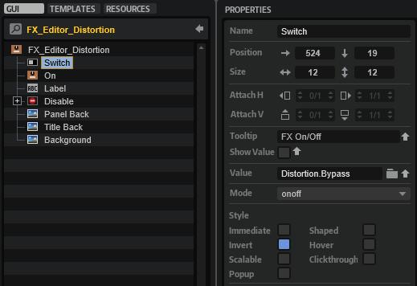
Label
For displaying the correct title:
- Select the 'Label' element and set its Text to "DISTORTION".
| Property | Value |
|---|---|
| Text | DISTORTION |
Knob Templates
Seven knobs are required for the distortion, six knobs for tone control and one knob for the dry/wet mix.
- In the GUI Tree, navigate to 'FX_Editor_Distortion/Disable/Controls'. Set position and size as follows:
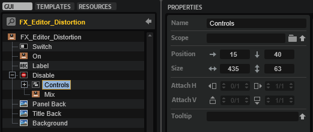
| Property | Value |
|---|---|
| Position X | 15 |
| Position Y | 40 |
| Width | 435 |
| Height | 63 |
- Duplicate the knob templates until you have six of them inside the 'Controls' Group.
- Set the properties of the knob templates as follows:
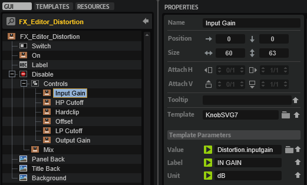
Knob 1
| Property | Value |
|---|---|
| Name | Input Gain |
| Position X | 0 |
| Position Y | 0 |
| Width | 60 |
| Height | 63 |
Knob 2
| Property | Value |
|---|---|
| Name | HP Cutoff |
| Position X | 75 |
| Position Y | 0 |
| Width | 60 |
| Height | 63 |
Knob 3
| Property | Value |
|---|---|
| Name | Hardclip |
| Position X | 150 |
| Position Y | 0 |
| Width | 60 |
| Height | 63 |
Knob 4
| Property | Value |
|---|---|
| Name | Offset |
| Position X | 225 |
| Position Y | 0 |
| Width | 60 |
| Height | 63 |
Knob 5
| Property | Value |
|---|---|
| Name | LP Cutoff |
| Position X | 300 |
| Position Y | 0 |
| Width | 60 |
| Height | 63 |
Knob 6
| Property | Value |
|---|---|
| Name | Output Gain |
| Position X | 375 |
| Position Y | 0 |
| Width | 60 |
| Height | 63 |
Each knob's template parameters must be configured so that they will have the correct display and connection. The easiest way to connect a parameter is by using drag and drop from the Parameter List. To do this, you need to select the Distortion effect in the Program Tree and open the Parameter List.
- For each knob, drag the respective Distortion parameter from the Parameter List onto the Value field of the Template Parameter and set the Label and Unit of the Template Parameters as follows:
Knob Template Input Gain
| Template Parameter | Value |
|---|---|
| Value | Distortion.inputgain |
| Label | IN GAIN |
| Unit | dB |
Knob Template HP Cutoff
| Template Parameter | Value |
|---|---|
| Value | Distortion.hpcutoff |
| Label | HIGHPASS |
| Unit | Hz |
Knob Template Hardclip
| Template Parameter | Value |
|---|---|
| Value | Distortion.hardclip |
| Label | HARDCLIP |
| Unit | % |
Knob Template Offset
| Template Parameter | Value |
|---|---|
| Value | Distortion.hardclipoffset |
| Label | OFFSET |
| Unit | % |
Knob Template LP Cutoff
| Template Parameter | Value |
|---|---|
| Value | Distortion.lpcutoff |
| Label | LOWPASS |
| Unit | Hz |
Knob Template Output Gain
| Template Parameter | Value |
|---|---|
| Value | Distortion.outputgain |
| Label | OUT GAIN |
| Unit | dB |
- The Mix knob template is the seventh and last knob that you have to adjust. Drag the Distortion's Mix parameter from the Parameter List onto the Value field of the Template Parameter and set Label and Unit as follows:
Knob Template Mix
| Template Parameter | Value |
|---|---|
| Value | Distortion.mix |
| Label | MIX |
| Unit | % |
- Finally, update the UI, for example, by selecting a different program and then returning to the Example VST Preset. This will rebuild the macro page and apply your changes.
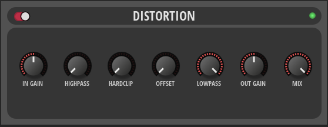
To add more effects, repeat the steps described above, starting with Adding Further Effects, and adjust the values to match the particular effect.
Final Example VST Preset
Here, you can find the Example VST Preset with all the editing steps applied.
How the Elements Interact
The UI script plays a central role in the FX Chain and controls most of its actions. The comments in the UI script explain which UI elements are connected to script parameters and why they are needed. Reading the comments and looking at the associated UI elements will help you to understand how the FX Chain works. The following screenshot shows the FX Chain template with its Template Parameters linked to the parameters of the UI script. These script parameters control how the effects chain is displayed on the macro page.
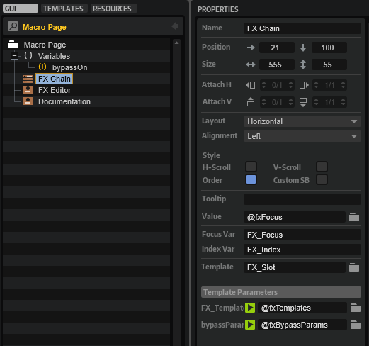
The UI script also contains print functions that are commented out. The print functions can be used to track the function calls.
- Go to the Macro Page Designer.
- Open the UI script in the internal script editor and remove the comments
--before each print function. - To monitor the UI script's output messages, click Show/Hide Script Output Messages
 .
. - Activate Test Macro Page
 .
. - Operate the FX Chain in the Macro Page Designer (not the Macro Page Editor).
❕ You must operate the FX Chain in the Macro Page Designer, otherwise the output messages will not be correct.
Below follows a brief description of the connections and the message exchange within the FX Chain.
FX Handling
- When an effect is loaded into a slot, the
"fxMenuSelectparameter of the UI script is changed and theonFxMenuChangedfunction is called. - The
onFxMenuChangedfunction of the UI script sets theselectFxparameter of the MIDI script, which uses a table to transfer information about which effect to load. TheselectFxparameter calls theonSelectFxfunction in the MIDI script, which loads the effect on the bus. - After the
onSelectFxfunction of the MIDI script has loaded the effect, thesendUpdateBusparameter is set. ThesendUpdateBusparameter of the MIDI script is connected to theupdateBusparameter of the UI script. - When the
updateBusparameter of the UI script is changed, theonBusChangedfunction is called and the associated parameters and templates of the FX Chain are updated by callingdefineFxSwitchesParamanddefineFxMenuParam. - After the
onBusChangedfunction of the UI script has updated the FX Chain templates, theonFxFocusChangedfunction is called. The FX Editor template uses Dynamic Template References, i.e., the template it displays is defined by the@fxEditorUI variable. TheonFxFocusChangedfunction defines the effect panel by setting the@fxEditorUI variable of the FX Editor template to the corresponding effect template.
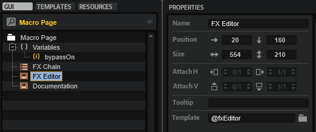
FX Drag and Drop Handling
- When an effect is dragged onto a new position in the FX Chain, the
onTemplateListViewDropfunction of the UI script is called. - The
onTemplateListViewDropfunction of the UI script sets themoveFxparameter of the MIDI script. This calls theonMoveFxfunction of the MIDI script, which repositions the effect on the bus. - After the
onMoveFxfunction has moved the effect, thesendUpdateBusparameter is set. ThesendUpdateBusparameter of the MIDI script is connected to theupdateBusparameter of the UI script.
All other steps are the same as in the FX Handling section, starting with step four.
Transferring the FX Chain to Your Instrument
To integrate the FX Chain into your macro page, you need to do the following:
- Copy the bus and effects from the Program Tree to your instrument. The program structure of your instrument must match the structure of the Example VST Preset and your macro page must be attached to the topmost element in the Program Tree.
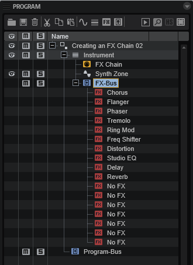
- Copy all the templates from the example VST preset that you edited in the steps above and paste them to the Templates Tree of your macro page. The templates in the example VST preset use Resources from the Basic Controls and Vector Controls libraries. In a later step, you can change these resources to match the look of your instrument.
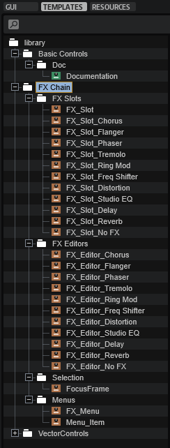
- Copy the Templates and Variables from the GUI Tree of the example VST preset to your macro page.
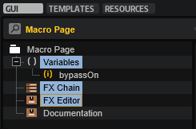
- Copy the code from the UI and MIDI scripts to the respective scripts of your instrument.
- Connect the
sendUpdateBusparameter of the MIDI script with theupdateBusparameter of the UI script.
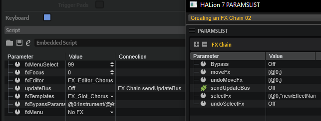
❕ The FX Chain will only work if this connection exists.
- Finally, update the UI, for example, by selecting a different program and then selecting your instrument again. This will rebuild the macro page and apply your changes.
FX Chain with Custom Look
You can customize the look and feel of your instrument entirely by using your own Resources. As an example, the FX chain of Electric Bass is shown in the following screenshot.
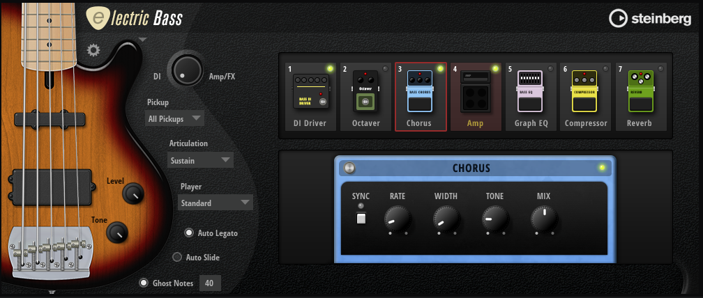